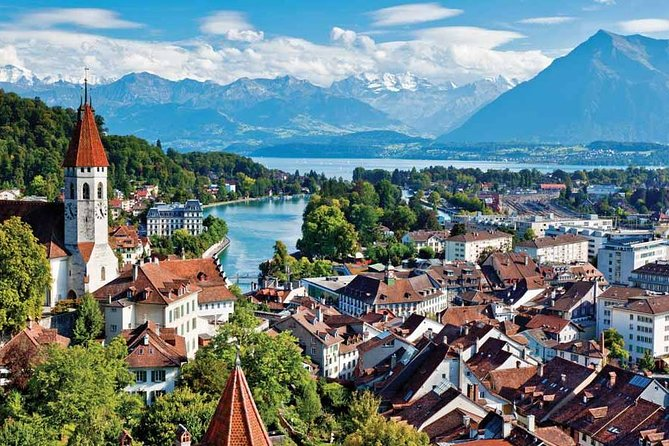

An amzing resort town that is located between Lake Brienz and Lake Thun. It has plenty of acres
of
flower
gargens, peaks of mountains and open landscapes.It comes with plenty of activities to do scuch
as
kayaking,
hiking, abseling,skiing, paragliding and snowboarding.It also has 45 modes of different
transport